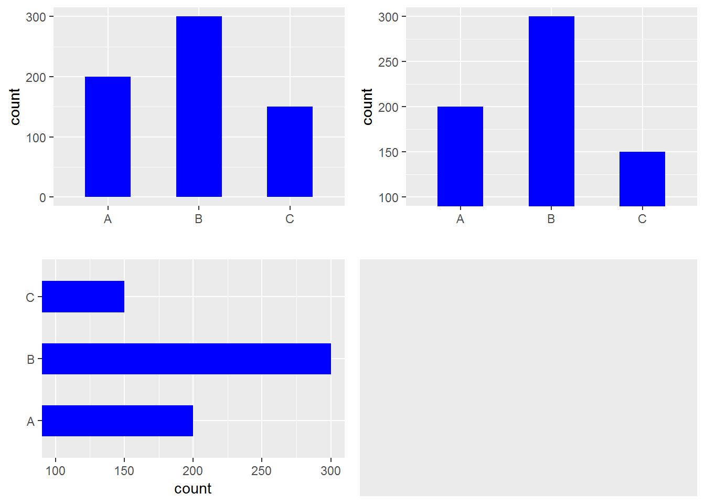

R tips
0.6 Testing character(0) in if statement
v <- character(0)
identical(v, character(0)) # returns TRUE
identical(v, "") # returns FALSE
identical(v, numeric(0)) # returns also FALSESource: https://stackoverflow.com/questions/25640161/r-how-to-test-for-character0-in-if-statement
0.7 Removing/keeping objects
Q: How to remove all objects but some from the workspace in R?
A:
rm(list=ls()[! ls() %in% c("a","b")])0.8 Programming with dplyr
library(dplyr)
cols <- c("am","gear")
grouping_vars <- rlang::syms(cols)
my_df <-
mtcars %>%
group_by(!!!grouping_vars) %>%
summarise(mean_cyl=mean(cyl))0.9 Add an extra column
Q: How to add a column to a dataframe?
A:
library(tibble) # for add_column
library(dplyr)
df <-
data.frame(a = 1:5, b = 2:6, c = 3:7) %>%
add_column(d = 4:8, .after = 2)0.10 Add an extra row
library(tibble) # for add_row
df_a <- data.frame(x = letters[8:10], y = 1:3)
(df_b <- add_row(df_a, x = "x", y = 10, .before = 1))## x y
## 1 x 10
## 2 h 1
## 3 i 2
## 4 j 30.11 De-duplicate a dataframe
library(dplyr)
a_df <-
data.frame(x = rep(letters[1:3], each = 2),
y = rep(letters[2:4], each = 2),
z = rep(1:2, each = 3))
(a_df)## x y z
## 1 a b 1
## 2 a b 1
## 3 b c 1
## 4 b c 2
## 5 c d 2
## 6 c d 2b_df <-
a_df %>%
distinct()
(b_df)## x y z
## 1 a b 1
## 2 b c 1
## 3 b c 2
## 4 c d 2c_df <-
a_df %>%
distinct(x, y, .keep_all = TRUE)
(c_df)## x y z
## 1 a b 1
## 2 b c 1
## 3 c d 20.12 Simple recoding
library(dplyr)
x <- letters[1:5]
y <- recode(x, a = "apple")
z <- recode(x, b = "banana")
c(y, z)## [1] "apple" "b" "c" "d" "e" "a" "banana"
## [8] "c" "d" "e"0.13 Use grepl() to filter
library(dplyr)
df_1 <-
data.frame(x = c("x-18", sample(letters[1:3], 3), "a-18", "b-18"), y = rnorm(6))
# get the rows where x contains '-'
(df_2 <- filter(df_1, grepl("-", x)))## x y
## 1 x-18 0.1500429
## 2 a-18 0.5881861
## 3 b-18 -0.52031320.14 Find number of NA’s
Q: How to check NA’s in a dataframe?
A: colSums(is.na(df))
0.15 Subset a dataframe by NA
Q: How to get the rows which have NA’s in a dataframe?
A: new_DF <- DF[rowSums(is.na(DF)) > 0, ]
0.16 Covert NA to 0
Q: How to convert NA to 0 in a dataframe?
A: df[is.na(df)] <- 0
0.17 Label y axis in ggplot2
Q: How to label y axis with percent/dollar/comma sign?
A:
p <- ggplot(df, aes(x, y)) + geom_point()
p + scale_y_continuous(labels = scales::percent)
p + scale_y_continuous(labels = scales::dollar)
p + scale_y_continuous(labels = scales::comma)0.18 Set plot margins in ggplot2
library(ggplot2)
my_df <- data.frame(x = 1:10, y = 1:10)
ggplot(my_df, aes(x, y)) +
geom_point() +
theme(plot.margin = unit(c(1, 2, 4, 6), "cm")) # top, right, bottom and left0.19 Set plot margins in base R
# sets the bottom, left, top and right margins respectively of
# the plot region in number of lines of text
par(mar = c(10, 8, 4, 2))
plot(1:10, 1:10, xlab = "x", ylab = "y")0.20 Deal with long labels in ggplot2
Source: https://stackoverflow.com/questions/41568411/how-to-maintain-size-of-ggplot-with-long-labels
0.21 Edit plotly object
library(ggplot2)
library(plotly)
df <- data.frame(x = c(1, 2, 3, 4),
y = c(1, 5, 3, 5),
group = c('A', 'A', 'B', 'B'))
g <-
ggplot(data=df, aes(x = x, y = y, colour = group)) +
geom_point(size = 4) +
geom_hline(yintercept = 2) +
scale_color_manual(values=c("red", "blue")) +
theme(plot.margin = unit(c(0.5, 0.5, 0.5, 0.5), "cm"))
p <- plotly_build(g) %>% config(displayModeBar = FALSE)
# to have a look at object p
# str(p)
# modify the text from "~yintercept: 2" to "y-intercept = 2"
p$x$data[[3]]$text <- "y-intercept = 2"
p0.22 Zoom in on a barchart
library(ggplot2)
library(gridExtra)
the_data <- data.frame(x = LETTERS[1:3], y = c(200, 300, 150))
# original
p1 <-
ggplot(the_data, aes(x = x, weight = y)) +
geom_bar(width = 0.5, fill = "blue") +
labs(x = "")
# zoomed
p2 <-
p1 + coord_cartesian(ylim = c(100, 300))
# horizontal bars; zoomed
p3 <-
p1 + coord_flip(ylim = c(100, 300))
p4 <- ggplot()
# put tem together
grid.arrange(p1, p2, p3, p4, newpage = TRUE,
layout_matrix = matrix(1:4, byrow = TRUE, 2, 2))
0.23 List loaded packages
Q: How to list the packages currently loaded into R’s work space?
A: (.packages())
Source: http://theobligatescientist.blogspot.com/2010/09/r-tip-listing-loaded-packages.html
0.24 Vectorize a matrix
x <- matrix(1:10, 2, 5)
# vectorize it by columns
c(x)
# or
as.vector(x)
# vectorize it by rows
c(t(x))Source: https://stackoverflow.com/questions/4570537/vectorizing-a-matrix